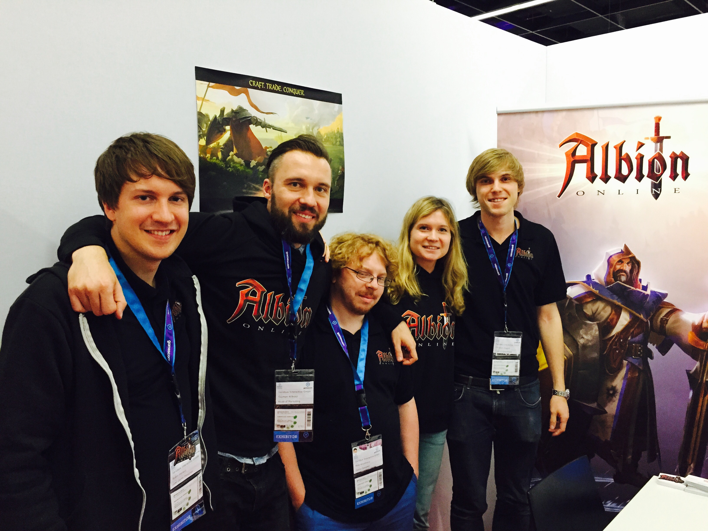
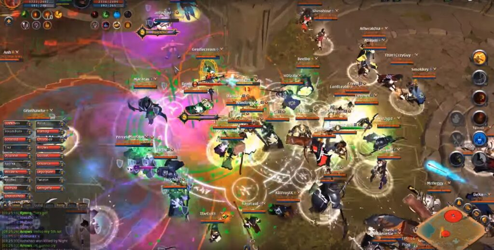

Albion Online's gameplay centres itself around a classless system, in which the equipment a player chooses to wear defines their abilities and the way they can play. Players can go out and do activities in Albion's world in order to gain "Fame," similar to "experience" in other MMORPGs. Through this Fame players can get access to other weapon and armour types, with stronger equipment requiring more Fame to use. Stronger gear can be used as players progress throughout the game. The game has a large open-world map that players can travel through. Different PVP zones offer different levels of risk and reward, including Yellow, Red, and Black zones; Red and Black zones featuring full loot drop upon death. The game has a fully player driven economy. All equipment and items are made by other players. The game offers both PVE and PVP experience.
Albion is using the Unity game engine which allows us to develop on several platforms with minimum effort. The server is pure C# code
During the beta stages of development, players were able to purchase "Founder's Packs" to gain access to the closed beta play-tests which were run intermittently by Sandbox Interactive, typically after an interval of a few months of development. After the release of the game, these founder's packs were made unavailable for purchase. Albion Online removed its free-to-play model for various reasons on December 30, 2015. (Which was then made free again at a later date) When it initially released on July 17, 2017, Albion Online offered a selection of "Starter Packs" which granted players access to the game and offered a varying amount of gold(In-game currency) to get started.[4] Once a player purchased any of the starter packs, they would be granted open-ended access to the game with no extra mandatory fees. Players could also purchase membership for a limited amount of time without the benefits of the starter packs. On April 10, 2019, Albion Online went Free to Play. Players can also buy premium with in-game currency (gold & silver). On March 20, 2023 a second server based in Singapore named "the east server" was opened to the public.
Albion Online has once again been named the Best PvP MMO by MassivelyOP! "There's obviously enough admiration on our team for it that we decided to give it the PvP MMO crown once again," said jury member Brianna Royce.
